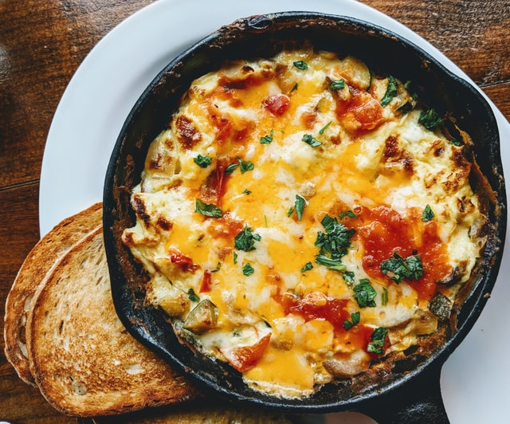

Macaroni and Cheese

Description
A quick, easy, and tasty macaroni and cheese dish. Fancy, designer
mac and cheese often costs a lot to prepare when you have so many exotic
and expensive cheeses, but they are not always the best tasting. This simple
recipe is cheap and tasty.
Ingredients
- 1 box elbow macaroni
- 1/4 cup butter
- 1/4 cup all-purpose flour
- 1/2 teaspoon salt
- ground black pepper to taste
- 2 cups milk
- 2 cups shredded cheddar cheese
Steps
- Bring a large pot of lightly salted water to a boil.
Cook elbow macaroni in the boiling water, stirring occasionally
until cooked through but firm to the bite(8 minutes)
- At the same time, melt butter in a saucepan over medium heat. Add flour,
salt, and pepper and stir until smooth, about 5 minutes.Pour in milk
slowly, while stirring continuously. Continue to cook and stir until mixture
is smooth and bubbling, about 5 minutes, making sure that the milk does not burn.
- Add cheddar cheese and stir until melted, 2 to 4 minutes.
- Refrigerate 1 hour for best flavour, or serve immediately.
- Drain macaroni and fold into cheese sauce until completely coated.